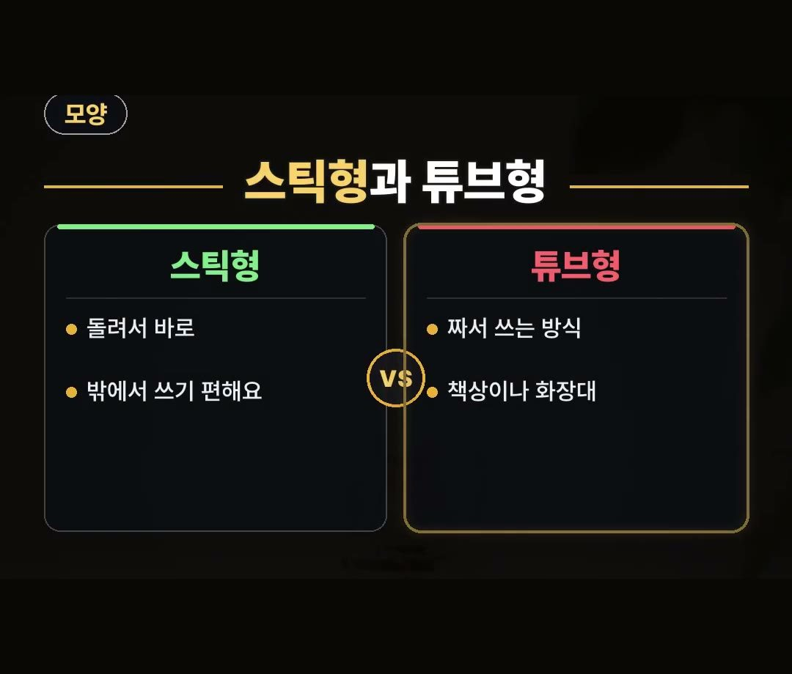
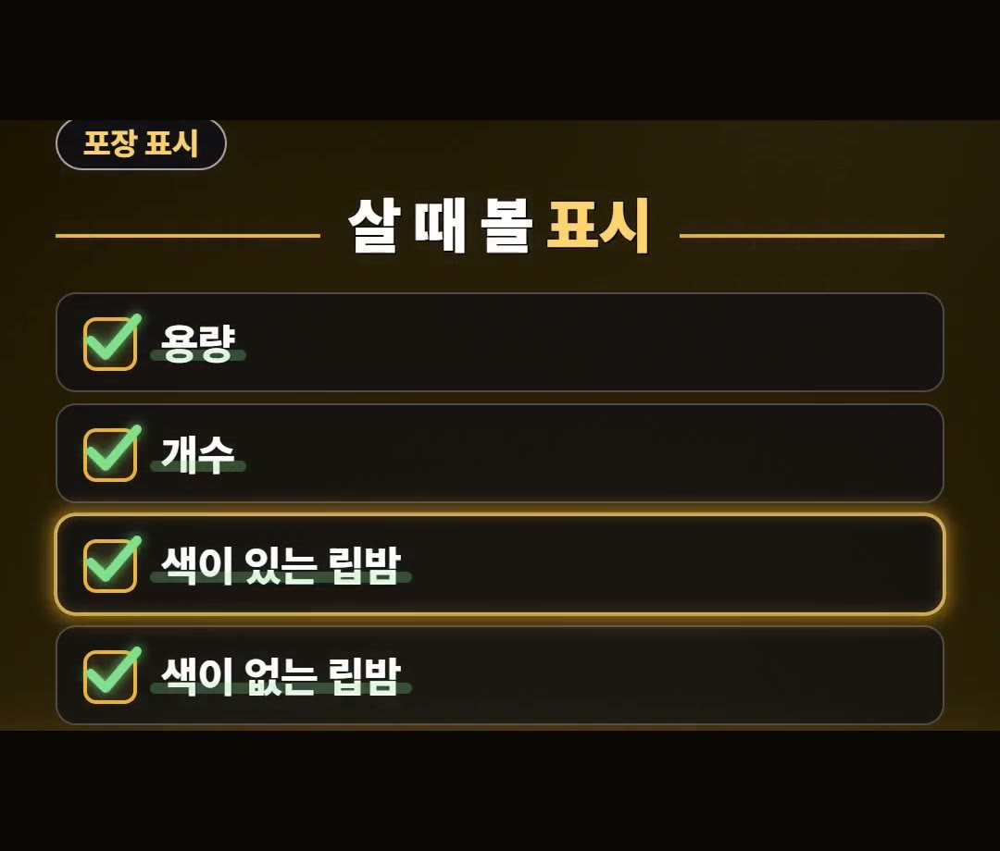
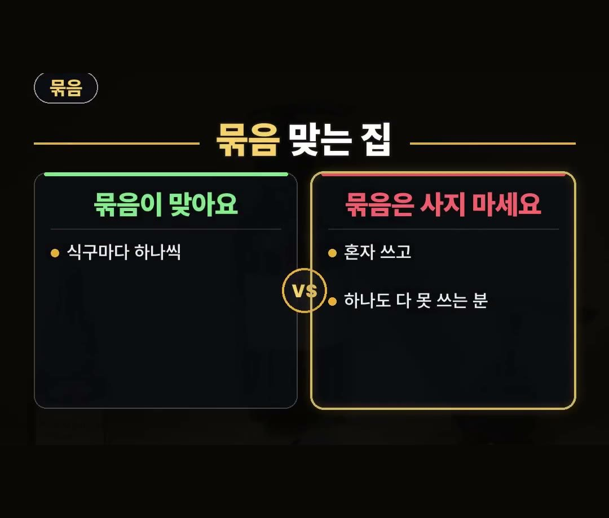

립밤 추천, 스틱 튜브 모르고 사면 쓰다 마는 이유
※ 이 글에는 제휴 링크가 포함되어 있으며, 링크를 통해 구매하시면 일정 수수료를 받을 수 있습니다. (가격은 같습니다)
※ 이 포스팅은 쿠팡 파트너스 활동의 일환으로, 이에 따른 일정액의 수수료를 제공받습니다.
※ 이 콘텐츠는 토스쇼핑 쉐어링크 활동의 일환으로, 링크를 통한 구매가 발생하면 일정 수수료를 지급받습니다.
립밤 추천 글을 찾아보기 전에 먼저 떠올려 볼 것이 있습니다.
가방에도 책상에도 립밤이 굴러다니는데, 끝까지 쓴 것은 드문 경우가 많다는 점이에요.
이번 글에서는 그 까닭과 함께 스틱형과 튜브형의 차이, 포장에서 볼 표시, 묶음이 맞는 집을 차례로 정리했습니다.

★아낌 소장의 한마디★ 립밤을 사 두고 끝까지 못 쓰는 까닭을 쓰는 자리와 모양으로 정리해 봤어요.
밖에서 쓸지 책상에 두고 쓸지, 식구마다 하나씩 두고 쓰는지부터 떠올려 보면 고를 때 기준이 됩니다. 💡
립밤을 끝까지 못 쓰는 까닭
가방에도 책상에도 립밤이 굴러다니는데 끝까지 쓴 것은 드물다면, 쓰는 자리와 립밤 모양이 안 맞아서일 수 있습니다.
립밤은 입술에 발라 촉촉하게 해 주는 물건이에요.
하는 일은 같은데 모양과 용량, 색이 제각각입니다.
그래서 무엇을 살지 정하기 전에 내가 립밤을 주로 어디에서 쓰는지부터 떠올려 보는 편이 좋습니다.
쓰는 자리와 모양이 안 맞으면 사 놓고도 쓰다 말기 쉽기 때문입니다.
값이나 이름보다 먼저 모양을 보자는 이야기예요.
스틱형과 튜브형의 차이

립밤 모양은 스틱형과 튜브형으로 나눠서 볼 수 있습니다.
- 스틱형: 돌려서 바로 바르는 방식이라 밖에서 쓰기 편합니다.
- 튜브형: 짜서 쓰는 방식이라 책상이나 화장대에 두고 쓰기 좋습니다.
스틱형은 돌려서 바로 바르고, 튜브형은 짜서 쓴다는 점이 두 모양의 차이입니다.
밖에서 자주 바르는 분이라면 스틱형이, 책상이나 화장대에 두고 쓰는 분이라면 튜브형이 쓰는 자리에 맞습니다.
어느 쪽이 더 낫다는 이야기가 아니라, 쓰는 자리에 따라 맞는 모양이 다르다는 이야기예요.
가방에 넣어 다닐 것인지, 책상이나 화장대에 둘 것인지 쓰는 자리부터 떠올려 보세요.
포장에 적힌 표시 확인하기

모양을 정했다면 다음은 포장에 적힌 표시입니다.
살 때는 포장에 적힌 용량과 개수를 보세요.
- 용량
- 개수
- 색이 있는 립밤인지, 색이 없는 립밤인지
색이 있는 립밤인지, 색이 없는 립밤인지도 표시에 적혀 있습니다.
립밤은 모양뿐 아니라 용량과 색도 제각각이라, 담기 전에 포장 표시를 한 번 읽어 두는 편이 좋습니다.
따로 찾아볼 것 없이 포장에 다 적혀 있는 내용이에요.
묶음이 맞는 집, 안 맞는 분

여러 개가 든 묶음을 살지는 쓰는 양부터 보고 정하면 됩니다.
- 묶음이 맞는 집: 식구마다 하나씩 두고 쓰는 집이면 여러 개 묶음이 맞습니다.
- 묶음이 안 맞는 분: 혼자 쓰고 하나도 다 못 쓰는 분이면 묶음은 사지 않는 편이 좋습니다.
식구마다 하나씩 두고 쓰는 집은 여러 개가 있어도 저마다 쓸 사람이 있습니다.
반대로 혼자 쓰는데 하나도 끝까지 못 쓰는 편이라면, 여러 개 묶음은 남기기 쉽습니다.
묶음을 담기 전에 우리 집에서 몇 사람이 쓰는지, 하나를 끝까지 쓰는 편인지 떠올려 보세요.
정리
- 립밤을 끝까지 못 쓰는 것은 쓰는 자리와 모양이 안 맞아서일 수 있습니다.
- 밖에서는 돌려서 바르는 스틱형, 책상이나 화장대에서는 짜서 쓰는 튜브형이 쓰기 편합니다.
- 살 때는 포장의 용량과 개수, 색이 있는지 없는지를 봅니다.
- 식구마다 하나씩 두고 쓰는 집은 묶음이 맞고, 혼자 쓰고 하나도 다 못 쓰는 분은 묶음을 사지 않는 편이 좋습니다.
영상 속 상품 안내
영상 끝에 나온 상품은 토스쇼핑에 올라온 상품 가운데 하나를 소개한 것이에요.
상품 설명에 따르면 돌려서 바르는 클래식 스틱 립밤이고, 3개가 한 묶음입니다.
묶음 상품이니 식구마다 하나씩 두고 쓰는 집인지 먼저 떠올려 보세요.
써 보고 쓴 글이 아니라 상품 설명을 옮긴 것이니, 자세한 내용은 판매 화면의 상품 설명에서 확인해 주세요.
제품 링크는 아래에 모아 두었어요.
📌 2026년 10월 기준 정보예요. 가격은 시기에 따라 달라질 수 있어요.
영상 화면: Pexels (KATRIN BOLOVTSOVA, MART PRODUCTION, Monstera Production, Pavel Danilyuk, Vanessa Garcia, cottonbro studio)
사진: Pexels (Yohira Hortensia)